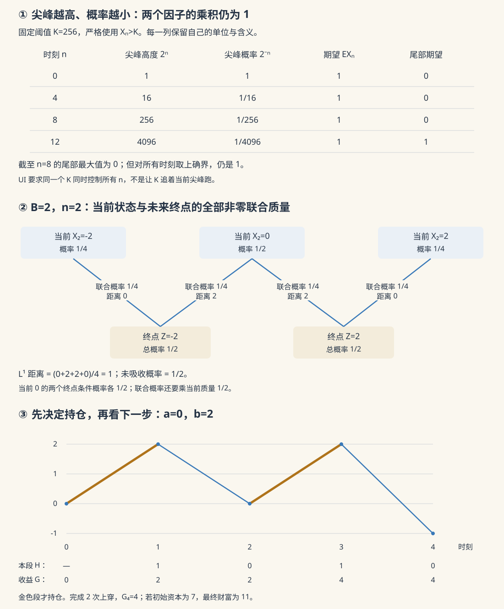

本页目录
测度概率 IV · 鞅收敛与应用
对标：Durrett PTE §4.2、4.4、4.6–4.7 ｜ 前置：测度与期望、条件期望与鞅 局部公平只比较相邻两期。要谈无限时间，还要分别回答：每条路径有没有极限？极限可不可积？能不能交换期望与极限？本页用两个完整模型区分这些问题，再证明上穿、UI、Doob 和集中不等式。
学习层：同样每期公平，极限为什么不同？
1. 先预测：均值不变，是否意味着极限也是这个均值？
模型 A 从 \(X_0=1\) 出发：每次公平硬币若为 H 就翻倍，第一次 T 后永远归零。模型 B 从 \(0\) 出发作对称随机游走，到达 \(-B\) 或 \(+B\) 就停止。先为每个模型选择 a.s. 极限与 \(L^1\) 收敛的判断，再揭示实验。
A 的悖论不是计算误差。 令 \(A_n=\{\text{前 }n\text{ 次全为 H}\}\)，\(A_0=\Omega\)。则
已归零的路径下期仍为零；尚未归零的路径，下期条件均值是 \(\tfrac12 2^{n+1}=2^n\)，所以这是非负鞅。事件“永远 H”的概率是 \(\lim_n2^{-n}=0\)；其余每条路径在有限时刻后恒为零。因此 \(X_n\to0\) a.s.，但 \(E|X_n-0|=1\)。
越来越少不等于越来越不重要。 在任意固定有限阈值 \(K\ge0\) 下，只要 \(2^n>K\)，就有
这说明 \(\sup_{n\ge0}E[X_n\mathbf1_{\{X_n>K\}}]=1\)，所以全族不是一致可积（UI）。
2. 有界模型：终点仍然随机，但可以交换期望
令 \(\xi_i\) 独立且等概率为 \(\pm1\)，\(S_n=\sum_{i=1}^n\xi_i\)，\(S_0=0\)，并定义
这是有界鞅，\(|X_n|\le B\)。为什么最终一定吸收？从任何内部状态出发，接下来 \(2B\) 步全向右的概率为 \(2^{-2B}\)，此事件必已碰到边界。逐块条件化给出
于是 \(X_n\to Z=S_{\tau_B}\in\{-B,B\}\) a.s.。有界收敛给 \(E|X_n-Z|\to0\) 与 \(EZ=0\)，由 \(Z\) 只有两种可能得两边概率各 \(1/2\)。这里没有先假定无限停时可交换期望。
3. 把当前状态与未来终点放在同一本账里
从状态 \(s\) 出发最终到 \(+B\) 的概率 \(h(s)\) 满足 \(h(s)=\tfrac12[h(s-1)+h(s+1)]\)，边界值为 \(0,1\)；解是 \(h(s)=(B+s)/(2B)\)。因此对任意正概率的当前状态，
例如 \(B=2,n=2\)，当前状态 \(-2,0,2\) 的概率为 \(1/4,1/2,1/4\)。只有中央状态还可能改变；它以各 \(1/2\) 概率去两个终点，每次距离都是 \(2\)。所以总 \(L^1\) 距离为 \((1/2)\times2=1\)，而未吸收概率为 \(1/2\)，两者不是同一个量。
实验逐步传播全部 \(2B+1\) 个状态，边界质量冻结；内部质量各分一半给相邻状态。完整联合表计算
对零概率状态，联合质量为零，条件概率栏标为未定义；不能做 \(0/0\)。表中所用的延拓命中函数依然有意义，但不是在零概率事件上唯一确定的条件概率。

4. 实验：有限前缀不是全部时刻
无 JavaScript 的读法。 A 取 \(n=8,K=256\)，当前尾部期望是 \(0\)，截至第 8 步的尾部期望最大值也是 \(0\)；但所有时刻的上确界是 \(1\)，因为第 9 步就超过了 \(K\)。这里严格使用 \(|X|>K\)，等于阈值不算入尾部。
B 取 \(B=2,n=2,K=1\)，当前尾部期望为 \(1\)、\(L^1\) 距离为 \(1\)。固定 \(B\) 后，所有时刻的尾部上确界在 \(K<B\) 时为 \(B\)，在 \(K\ge B\) 时为 \(0\)：前者由终点绝对值趋于 \(B\) 和上界 \(B\) 得到，后者由一致有界性得到。所以让 \(K\to\infty\) 时，B 的尾部统一消失。
调节 \(n=0,\ldots,1000\)、\(B=1,\ldots,24\) 和固定阈值 \(K\ge0\)。两图画全部时刻及全部状态；尖峰状态轴保留真实数值间距，极小概率同时用科学记数法列出。表中分别列当前尾部、有限前缀最大值、由模型证明得到的全族上确界。A 的高度与概率分栏，避免把“很高”和“很可能”画成同一量。没有随机抽样；解析公式与有限概率递推以浮点数求值，有限快照不能替代无限时证明。
5. 本页要解决的三道门槛
| 问题 | 一个足够条件 | 不能由什么替代 |
|---|---|---|
| 路径是否收敛到有限值？ | 鞅的 \(L^1\) 一致有界 | 仅有每期均值相同 |
| 能否得到 \(L^1\) 收敛？ | 上述鞅再加 UI | 仅有 a.s. 收敛或 \(L^1\) 有界 |
| 极限是否等于一个常数？ | 还需模型的额外结构 | UI 本身；模型 B 的极限随机 |
1. 上穿：用过去决定动作，才能取条件期望
取实数 \(a<b\)。从某个 \(X_j\le a\) 开始，到后来第一次 \(X_k\ge b\) 算一次完成的上穿，重复这一规则得到 \(U_n[a,b]\)。若 \(X_0\le a\)，可以从时刻 \(0\) 开始；\(U_0=0\)。
持仓规则是：看到价格 \(\le a\) 后持有一单位，看到价格 \(\ge b\) 后清空，其他时刻保持原状态。第 \(m\) 段是否持仓 \(H_m\in\{0,1\}\) 已由时刻 \(m-1\) 的信息决定。零初始资本的累计收益为
每次完成的穿越至少增加 \(b-a\)；若最后还持仓，买入价不超过 \(a\)，这段收益至少是 \(-(X_n-a)^-\)。逐路径有
若 \(X\) 是可积上鞅，则 \(E[H_m(X_m-X_{m-1})]\le0\)，因为 \(H_m\) 非负、有界、可预测。因此
有初始资本 \(w_0\) 时总财富是 \(w_0+G_n\)；上式控制收益，不把 \(w_0\) 算作策略赚到的钱。若提前看见 \(\Delta X_m\) 再选 \(H_m=\mathbf1_{\{\Delta X_m>0\}}\)，条件期望这一步就失效。
下鞅的两种正确版本。 对 \(-X\) 用上式，得到下穿数 \(D_n[a,b]\) 的界
下鞅也有真正的上穿界，但证明须多一步。令 \(Y_m=\max(X_m,a)\)；凸性与单调性使 \(Y\) 仍为下鞅，上穿次数不变。对 \(Y\) 的同一策略，未完成的最后一段也不亏，所以 \((b-a)U_n\le(H\cdot Y)_n\)。补策略 \(1-H\) 的期望收益非负，而两者之和是 \(Y_n-Y_0\)，故
这解释了为什么不同教材的“上穿不等式”看上去不同：上鞅版控制终点负部，下鞅版控制正部增量。不能只换名称而沿用原证明的方向。
2. 从有限穿越次数到有限极限
先证明更一般的版本：若 \(X\) 是下鞅且 \(C=\sup_nEX_n^+<\infty\)，则 \(X_n\) a.s. 收敛到一个 \(L^1\) 随机变量。
对每对有理数 \(a<b\)，上穿界给 \(EU_n[a,b]\le(C+|a|)/(b-a)\)。因 \(U_n\) 单调增加，MCT 得 \(EU_\infty<\infty\)，于是 \(U_\infty<\infty\) a.s.。可数多个有理区间可以同时取概率一事件。若一条路径的 \(\liminf\) 小于 \(\limsup\)，就能在两者中间挑有理 \(a<b\)，这条路径必有无穷多次上穿，矛盾。
到这里得到的只是扩展实数极限，还需排除无穷大。下鞅有 \(EX_n\ge EX_0\)，所以
对正、负部分分别用 Fatou，极限的两部分期望都有限，因此极限是有限值且可积。对上鞅使用 \(-X\) 即可。
特别地，鞅若 \(\sup_nE|X_n|<\infty\) 就满足条件；非负上鞅满足 \(EX_n\le EX_0\)，也必 a.s. 收敛。A 正是非负、\(L^1\) 有界、极限可积，却没有 \(L^1\) 收敛的反例。
3. UI、闭合鞅与“终值的逐步预测”
UI 的量词顺序是
对每个固定 \(n\)，尾部都会消失；UI 要求能为全部 \(n\) 选择同一个 \(K\)。实验的“有限前缀最大值”只取 \(0\le t\le n\)，因此不能证明 UI。
对离散时间鞅，下列三项等价：
- \(\{X_n\}\) UI。
- 存在 \(X_\infty\in L^1\)，使 \(X_n\to X_\infty\) in \(L^1\)。
- 存在一个固定的 \(Y\in L^1\)，使 \(X_n=E[Y\mid\mathcal F_n]\)。
为什么 1 推出 2？ UI 给 \(L^1\) 有界，上一节给 a.s. 极限；再用 Vitali 的 UI 收敛判据 得 \(L^1\) 收敛。反向的 \(L^1\) 收敛序列 UI 也见该判据；对鞅还可沿下面两步得到。
为什么 2 推出 3，而且能取 \(Y=X_\infty\)？ 固定 \(n\)，对所有 \(m\ge n\)，鞅性给 \(X_n=E[X_m\mid\mathcal F_n]\)。条件期望的 \(L^1\) 收缩性于是给
为什么一个固定 \(Y\) 生成的所有条件期望都 UI？ 令 \(Z=E[Y\mid\mathcal G]\)、\(A=\{|Z|>K\}\)。把 \(|Y|\) 按 \(K/2\) 分开，得到 \(|Z|\le K/2+E[|Y|\mathbf1_{\{|Y|>K/2\}}\mid\mathcal G]\)。在 \(A\) 上，第一项小于 \(|Z|/2\)，故
右侧不依赖 \(\mathcal G\)。这就证明了 3 推出 1，也解释“闭合”：每一期都是对同一终值的预测。模型 B 有 \(X_n=E[Z\mid\mathcal F_n]\)，模型 A 则不能由其终值 \(0\) 闭合。
4. 信息增加与信息减少
Lévy 向上定理。 若 \(\mathcal F_n\uparrow\)、\(\mathcal F_\infty=\sigma(\bigcup_n\mathcal F_n)\)、\(Y\in L^1\)，则
上一节已保证收敛。记极限为 \(Z\)；对 \(A\in\mathcal F_m\)，所有 \(n\ge m\) 都有 \(E[Z_n\mathbf1_A]=E[Y\mathbf1_A]\)，\(L^1\) 极限保持该等式。并集 \(\bigcup_m\mathcal F_m\) 是代数，\(\pi\)–\(\lambda\) 唯一性把等式推广到 \(\mathcal F_\infty\)；\(Z\) 对该域可测，于是识别出条件期望。只有当 \(Y\) 对最终信息域可测时，极限才是 \(Y\) 本身。
反向鞅定理。 若 \(\mathcal G_n\downarrow\)、\(\mathcal G_\infty=\bigcap_n\mathcal G_n\)，则
记 \(Z_n=E[Y\mid\mathcal G_n]\)。对每个有限 \(N\)，逆序列 \(Z_N,Z_{N-1},\ldots,Z_0\) 配合递增的信息域是鞅；其上穿期望受 \(E[(Z_0-a)^+]/(b-a)\) 一致控制。随着 \(N\) 增大，整段逆序的最大完整上穿数不减；若原序列振荡，它的逆序片段会产生任意多的穿越，故同一有理区间论证给 a.s. 极限。固定 \(Y\) 的条件期望全族 UI，进一步给 \(L^1\) 极限。对每个固定 \(m\)，所有 \(n\ge m\) 的 \(Z_n\) 都对 \(\mathcal G_m\) 可测；取可测的极限版本后，它对交域可测。对 \(A\in\mathcal G_\infty\) 传递积分等式，便确定了右端。
两种方向都不是“信息无限多就全知”：极限只能保留对应极限信息域允许的信息。
5. Doob 极大不等式：终点控制全程峰值
设 \(X_0,\ldots,X_n\) 是非负下鞅，\(X_n^*=\max_{0\le k\le n}X_k\)，\(\lambda>0\)。令 \(A_k\) 是“第一次达到 \(\lambda\) 恰在 \(k\)”的事件。\(A_k\in\mathcal F_k\) 且互不相交，由 \(E[X_n\mid\mathcal F_k]\ge X_k\)，
保留中间项比只记 \(EX_n/\lambda\) 更有用。取 \(p>1\) 且 \(X_n\in L^p\)，令 \(V=X_n^*\)。先对截断 \(V\wedge R\) 积分，利用层蛋糕表示与 Tonelli：
第一步来自对 \(\lambda\in(0,R)\) 积分 \(p\lambda^{p-2}E[X_n\mathbf1_{\{V\ge\lambda\}}]\)；\(\int_0^{V\wedge R}\lambda^{p-2}d\lambda=(V\wedge R)^{p-1}/(p-1)\)。若截断范数不为零即可约去，最后令 \(R\uparrow\infty\)：
对任意鞅 \(M\)，\(|M|\) 是非负下鞅，故可控制 \(\max|M_k|\)。\(p=1\) 时上面积分在零点发散，不能代入常数；弱型概率界仍成立。
6. Azuma 与 McDiarmid：先认清“宽度”
下面的 \(c_i\) 是确定常数，阈值 \(t>0\)。若所有 \(c_i=0\)，偏差为零；其余情况才使用含 \(\sum c_i^2\) 的分母。
条件 Hoeffding 引理的来源。 对均值零、位于长度 \(d\) 区间的随机变量 \(D\)，令 \(\psi(\theta)=\log Ee^{\theta D}\)。指数倾斜后的分布仍在同一区间，且 \(\psi''(\theta)\) 等于该分布的方差。任何区间内变量 \(V\) 满足 \(\operatorname{Var}(V)\le E[(V-(a+b)/2)^2]\le d^2/4\)。因此 \(\psi(0)=\psi'(0)=0\)，积分两次得 \(\psi(\theta)\le\theta^2d^2/8\)，正负 \(\theta\) 都适用。对给定过去的信息重复这个有界分布论证，得到条件版本。
对鞅差 \(\Delta_i=M_i-M_{i-1}\)，若 \(|\Delta_i|\le c_i\)，其区间宽度是 \(2c_i\)。条件化逐次迭代给
用 Markov 控制上尾，并取 \(\theta=t/\sum c_i^2\)，再对负号使用同样方法并合并两尾：
这就是 Azuma–Hoeffding。若只知条件均值零而没有增量界，不能照搬。
McDiarmid 的输入条件不同。 独立输入 \(Z_1,\ldots,Z_n\)，可测可积的实值函数 \(f\) 满足：仅替换第 \(i\) 坐标，函数值改变至多 \(c_i\)。构造 \(M_i=E[f\mid Z_1,\ldots,Z_i]\)。固定过去，记 \(g_i(z)=E[f(Z_1,\ldots,Z_{i-1},z,Z_{i+1},\ldots,Z_n)]\)，这里只对未来积分。独立性保证对不同 \(z\) 使用同一个未来分布，所以 \(|g_i(z)-g_i(z')|\le c_i\)。于是 \(M_i-M_{i-1}\) 的条件范围长度至多 \(c_i\)，并不是 \(2c_i\)。Hoeffding 引理与同一优化步骤给
这个推导不要求输入有密度；一般乘积概率空间用积分，有限空间用求和。输入相关时，共享同一个未来分布这一步可能失效。
7. 应用：随机极限、灭绝与学习误差
Pólya 坛子。 从 \(a\) 个红球、\(b\) 个蓝球开始，\(a,b\) 为正整数。每次均匀抽一个球，放回并加一个同色球。若红球比例为 \(R_n\)，下次加红球的条件概率就是 \(R_n\)，直接算得 \(E[R_{n+1}\mid\mathcal F_n]=R_n\)。比例位于 \([0,1]\)，故 a.s.、\(L^1\) 收敛；一般极限分布是 \(\operatorname{Beta}(a,b)\)，只有 \(a=b=1\) 才是均匀分布。
均匀情形可以直接验算：前 \(n\) 次恰有 \(k\) 次红色的任意指定顺序，其概率为 \(k!(n-k)!/(n+1)!\)。乘上 \(\binom nk\)，得到红色次数在 \(0,\ldots,n\) 上均匀。因此 \(R_n=(k+1)/(n+2)\) 的分布趋向 \(U(0,1)\)。这与有界鞅的随机极限一致，并不意味着每次坛子实验得到同一个比例。
分支过程。 后代数非负整数、有限均值 \(\mu>0\)，每个个体独立繁殖，且 \(Z_0=1\)。\(W_n=Z_n/\mu^n\) 是非负鞅，必 a.s. 收敛，但不能只凭这个结论断言 \(EW_\infty=1\)。若 \(\mu<1\)，\(P(Z_n>0)\le EZ_n=\mu^n\to0\)，故最终灭绝。若 \(\mu=1\) 且后代数不恒等于 \(1\)，灭绝概率也为 \(1\)；可用后代母函数 \(g\) 的最小不动点刻画：严格凸性、\(g(1)=g'(1)=1\) 给 \(g(s)>s\)（\(0\le s<1\)）。若后代数恒为 \(1\)，则 \(Z_n\equiv1\)，这是必须保留的退化例外。\(\mu=0\) 时后代数为零 a.s.，下一代灭绝，不能写 \(Z_n/\mu^n\)。
学习误差。 i.i.d. 样本、损失在 \([0,C]\) 时，固定假设的经验风险和 ERM 的最小训练风险都有单坐标敏感度 \(C/n\)。McDiarmid 控制的是这两个数据函数各自围绕期望的波动。对数据选出的 \(\widehat h\)，要控制 \(R(\widehat h)-\widehat R(\widehat h)\)，还要建立对假设类的统一控制或稳定性；“训练误差很集中”不能单独证明泛化。
8. 完整练习
练习 A：有限前缀怎样掩盖非 UI？
模型 A 取 \(n=8\)。分别算 \(K=255\) 与 \(K=256\) 的当前尾部、有限前缀最大值和全族上确界。
展开计算与量词
高度为 \(256\)，概率为 \(1/256\)。\(K=255\) 时，当前尾部与前缀最大值都是 \(1\)；\(K=256\) 时，因为是严格大于，二者都是 \(0\)。但对任意有限 \(K\) 都有更大的 \(m\) 使 \(2^m>K\)，所以全族上确界始终为 \(1\)。两个极限次序不同：
练习 B：从联合分布验证终值预测
取 \(B=2,n=2\)，列出 \((X_n,Z)\) 的非零联合质量，计算 \(E|X_n-Z|\) 与每个当前状态下的终值条件均值。
展开联合账
四个非零格子 \((-2,-2),(0,-2),(0,2),(2,2)\) 的概率各 \(1/4\)。所以
当前状态 \(-2,0,2\) 下，终值条件均值分别是 \(-2,(-2+2)/2,2\)，恰等于当前值。当前二阶矩是 \(2\)，也核对了 \(E|X_n-Z|=(B^2-EX_n^2)/B=(4-2)/2=1\)。未吸收概率是 \(1/2\)，乘上内部状态的条件距离 \(2\) 才得到总距离。
练习 C：上穿收益与初始资本
对路径 \(0,2,0,2,-1\)，取 \(a=0,b=2\)。写出各步持仓、完成上穿数、收益与总财富（初始资本 \(w_0=7\)）。
展开可预测策略账
| 时刻 | 当前值 | 本段持仓 \(H_m\) | 完成上穿数 | 累计收益 \(G_m\) | 总财富 |
|---|---|---|---|---|---|
| 0 | 0 | 尚无增量 | 0 | 0 | 7 |
| 1 | 2 | 1 | 1 | 2 | 9 |
| 2 | 0 | 0 | 1 | 2 | 9 |
| 3 | 2 | 1 | 2 | 4 | 11 |
| 4 | −1 | 0 | 2 | 4 | 11 |
第 4 步到达 \(-1\) 后才重新决定持仓，并没有对刚发生的下降下注。此刻路径下界为 \(2\times2-(-1)^-=3\)，确有 \(G_4=4\ge3\)。这一条确定性路径可以验证代数不等式；要推出期望界，还必须对过程假设上鞅性。
练习 D：集中与泛化之间还差什么？
取 \(n=1000,C=1,t=0.05\)。对固定假设经验风险和可测的 ERM 最小训练风险，分别写集中界；有限假设类有 \(H\) 个元素时，怎样得到选中假设的泛化界？
展开常数与统一性
两者都有 \(\sum c_i^2=1/1000\)，故各自对期望的双侧偏差概率至多
固定假设有 \(E\widehat R(h)=R(h)\)；数据选择的最小训练风险的期望一般不是选中假设的真实风险。有限类中，对每个固定 \(h\) 分别用 Hoeffding，再用 union bound：
在这个统一事件的补集上，任何从该有限类中选出的 \(\widehat h\) 都满足差距小于 \(t\)。界大于 \(1\) 时只剩平凡上界 \(1\)；假设类无限时不能把 \(H\) 换成一个未定义的“数量”。
下一步：高维概率研究亚高斯、矩阵与复杂度；随机分析把这些离散时间工具带到连续过程。核对来源：Durrett 官方教材、CMU 条件集中与有界差分讲义。